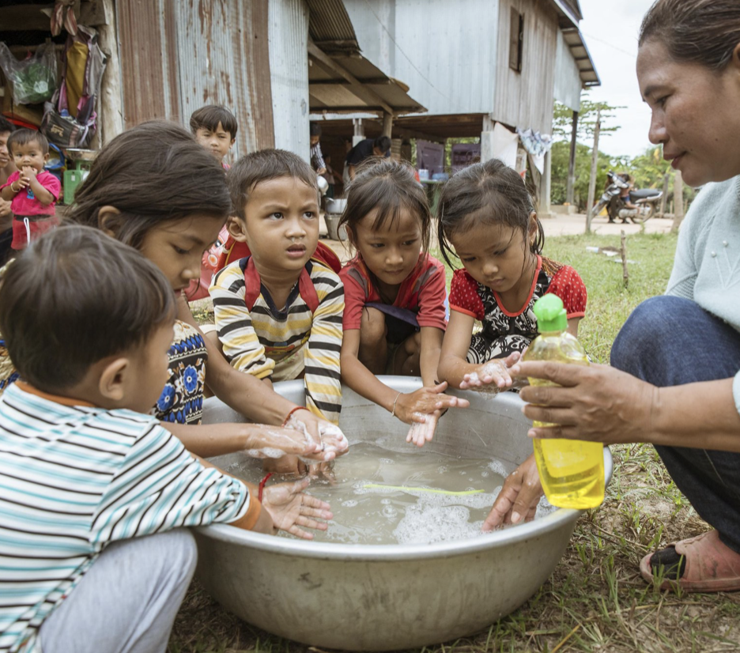

Final Project: Prototyping & Iterations
In this project, we tested out multiple types of materials from 3D printing, ceramic, and resin
Introduction
In an effort to address the critical issue of clean water accessibility in Cambodia, where approximately 70% of the population lacks access to safe drinking water, our project embarked on a mission to design, develop, and refine a water filter.
Project Needs Statement
The significant challenge faced by the Cambodian population is the scarcity of clean water, leading to a high risk of waterborne diseases. Although residents in rural areas of Cambodia have a big river flowing through the village, the river water is highly contaminated.
The villages also lack clean restrooms and health clinics. Our objective is to provide a water filtration solution that is economical, easy to maintain, and efficient in purifying water, thereby improving the quality of life and health of the community.
Design Principles & How to Measure Success
1. Easy to Use and Maintain
- The filter design demands simplicity in maintenance, eliminating the need for specialized tools.
- Operationally independent of electricity, ensuring it is usable in remote areas.
- Designed for straightforward cleaning or replacement of parts.
2. Cost-effectiveness
- Utilization of inexpensive materials to ensure the filter is economically viable.
- The design allows for mass production, further reducing costs.
3. Efficiency in Filtering Bacterias and Viruses
- Capable of eliminating bacteria and viruses responsible for waterborne illnesses.
- Achieves water purity standards set by the World Health Organization (WHO), with particulate matter per million (PPM) below acceptable thresholds.
Design Process
The design process commenced with a focus on understanding the interaction between the filter and its housing container. This approach facilitated a clearer perspective on the CAD and CAM requirements for the project.
1. First Design
The initial design incorporated the filter at the top of the container, similar to commercial water pitchers. However, this design was limited by the water volume it could process at one time. We added two handles so that it’s easier for the user to carry water. The cap is also designed to be wider to catch rainwater
2. Second Design
To enhance the capacity, the second design proposed a design that could accommodate larger volumes of water, making it more suitable for users collecting water from natural sources like rain water and river water. We also added the cap holder to address all customer needs
3. Third Design
The final design aimed at versatility, allowing the filter to be attached to any existing container, thus maximizing the potential water volume and reducing costs by utilizing available containers. They can also reuse an existing bucket.
We figured this out after thinking about how many competitors we already have on the market and wanted to find something really niche and new that we can work on. We have a very easy to use design in which villagers just need to unscrew the cap and put in new material for our filter.
We also thought about how we can utilize a new type of material - ceramic. We found out that ceramic filter is very useful and can get rid of 95% of E.coli bacteria. As a Studio Arts student, I have discussed this with the Art department and started working the first prototypes
Iterations
1. First Iteration
For our first iteration, using Prusa Mini+ 3D Printer we printed out two open-source PLA filter container to understand the mechanisms and learn how we can improve from it. We tested with the water fountain outside of the classroom and figured that water was leaking through the crack. Our solution is to use resin as a coat to resolve the leaking issue.
We decided to use the design on the left because it was easy to screw the cap. We also decided to print out a tap on the bottom of our filter to control the flow of water. We also need to remove the cap from the design in order to fit it into a container
2. Second Iteration
In our second iteration, we redesigned the filter to be easier to integrate with container/ bucket. We also printed a water tap
Unfortunately, there was not enough holes for the water to easily flow through Even though we identified this problem since the previous iteration, the top is still not small enough to fit in a container We had a hard time trying to screw in so we planned to make some small modifications to make the process easier
We will also print the ring using a different type of material to ensure the flexibility. Lastly, we learned the lesson that we need to use organic support for our next iteration
3. Third Iteration

For this iteration, we used organic support and used Fusion360 to designed the screw becoming smaller in order to be screwed on easier. Additionally, we printed the tap handle smaller to be useable and easier to twist.
We put a resin coat on the 3D print to make sure there is not water leak
4. Fourth Iteration
For this fourth iteration, we will make a CAD design to mix the tap and the filter We also decided to use PET material to ensure the flexibility of the top screw of the tap.

We succesfully printed partial of the prints we have on PRUSA but some of them unfortunately failed because too much support that we couldn't take off neatly.
Reflection
CAD & CAM: The design was brought to life through CAD software, followed by CAM processes to produce prototypes using a Prusa Mini+ 3D printer and PLA material. This initial prototype provided a tangible basis for testing and further refinements.
Testing and Feedback: The prototype testing was conducted using two main criteria: usability and efficiency in filtering. The goal was to ensure the filter met our design principles without requiring special tools or electricity and could effectively reduce water contaminants. Feedback was sought from potential users, focusing on ease of use, maintenance, and the quality of the filtered water.
Throughout the project, iterative cycles of design, production, and testing were crucial in evolving the water filter prototype into a viable solution for the Cambodian community. Each step, from CAD redesigns to material adjustments, played a significant role in enhancing the product's usability, affordability, and effectiveness. The project's iterative nature allowed for continuous learning and improvement, with the most significant advancements observed in the transitions between different prototypes. Ultimately, this project not only aimed at addressing a pressing humanitarian need but also served as a valuable educational experience in the practical application of engineering principles for social good.